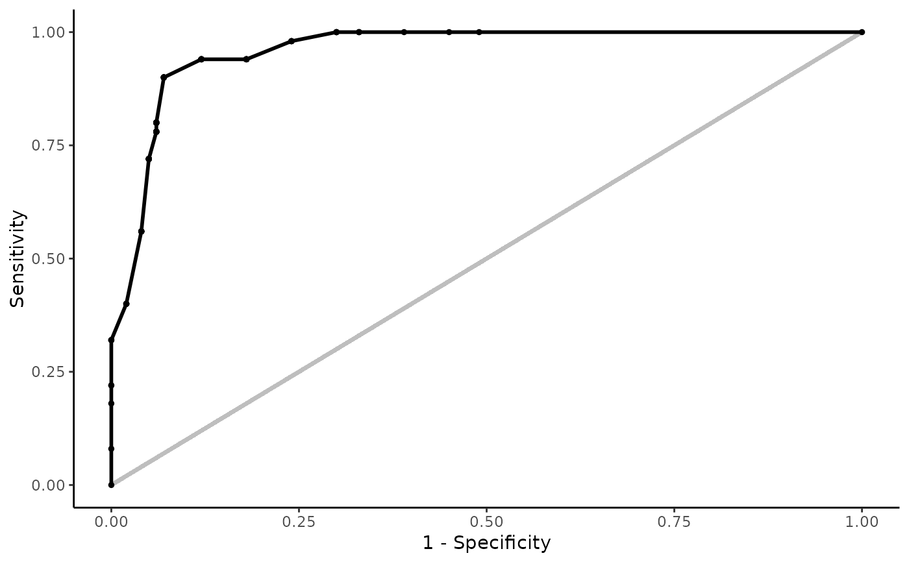
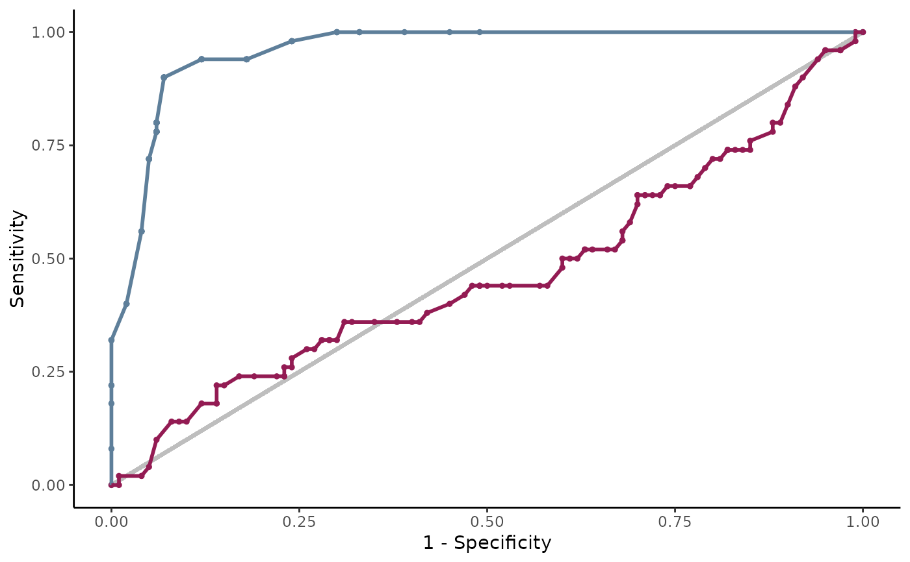
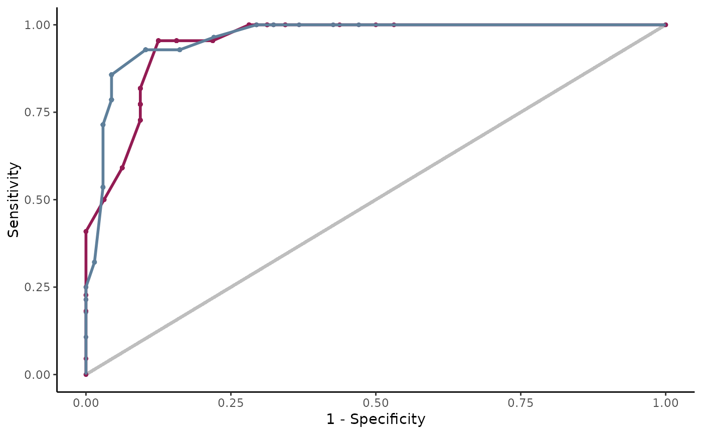

Create a ROC Curve
create_roc_curve( probs, real, by = 0.01, stratified_by = "probability_threshold", chosen_threshold = NA, interactive = F, main_slider = "threshold", col_values = c("#5BC0BE", "#FC8D62", "#8DA0CB", "#E78AC3", "#A4243B") )
| probs | a vector of estimated probabilities or a list of vectors of that kind (one for each model) |
|---|---|
| real | a vector of binary outcomes or a list of vectors of that kind (one for each population) |
| by | number: increment of the sequence. |
| stratified_by | Performance Metrics can be stratified by Probability Threshold or alternatively by Predicted Positives Condition Rate |
| chosen_threshold | a chosen threshold to display (for non-interactive) |
| interactive | whether the plot should be interactive plots |
| main_slider | what is the main slider - threshold, percent positives or positives |
| col_values | color palette |
create_roc_curve( probs = example_dat$estimated_probabilities, real = example_dat$outcome )  create_roc_curve( probs = list( "First Model" = example_dat$estimated_probabilities, "Second Model" = example_dat$random_guess ), real = example_dat$outcome )  create_roc_curve( probs = list( "train" = example_dat %>% dplyr::filter(type_of_set == "train") %>% dplyr::pull(estimated_probabilities), "test" = example_dat %>% dplyr::filter(type_of_set == "test") %>% dplyr::pull(estimated_probabilities) ), real = list( "train" = example_dat %>% dplyr::filter(type_of_set == "train") %>% dplyr::pull(outcome), "test" = example_dat %>% dplyr::filter(type_of_set == "test") %>% dplyr::pull(outcome) ) )  if (FALSE) { create_roc_curve( probs = example_dat$estimated_probabilities, real = example_dat$outcome, interactive = TRUE ) create_roc_curve( probs = list( "First Model" = example_dat$estimated_probabilities, "Second Model" = example_dat$random_guess ), real = example_dat$outcome, interactive = TRUE ) create_roc_curve( probs = list( "train" = example_dat %>% dplyr::filter(type_of_set == "train") %>% dplyr::pull(estimated_probabilities), "test" = example_dat %>% dplyr::filter(type_of_set == "test") %>% dplyr::pull(estimated_probabilities) ), real = list( "train" = example_dat %>% dplyr::filter(type_of_set == "train") %>% dplyr::pull(outcome), "test" = example_dat %>% dplyr::filter(type_of_set == "test") %>% dplyr::pull(outcome) ), interactive = TRUE ) }